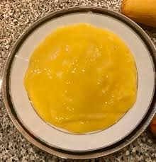

Mousse de Mango

Ingredientes
- 1/2 tazas de leche condensada
- 1/2 tazas de queso crema
- 2 tazas de mango
- 2 tazas de crema para batir
- Al gusto de mango, en cubos, para decorar
- Al gusto de hoja de menta, para decorar
Preparación
Paso 1: Licúa la leche condensada, el queso crema y el mango. Reserva.

Paso 2: Bate la crema para batir hasta doblar su tamaño.
Paso 3: Mezcla la crema batida con el mango licuado hasta integrar.
Paso 4: Vierte en vasos pequeños y refrigera el mousse de mango por 60 minutos.
Paso 5: Decora con hojas de menta.